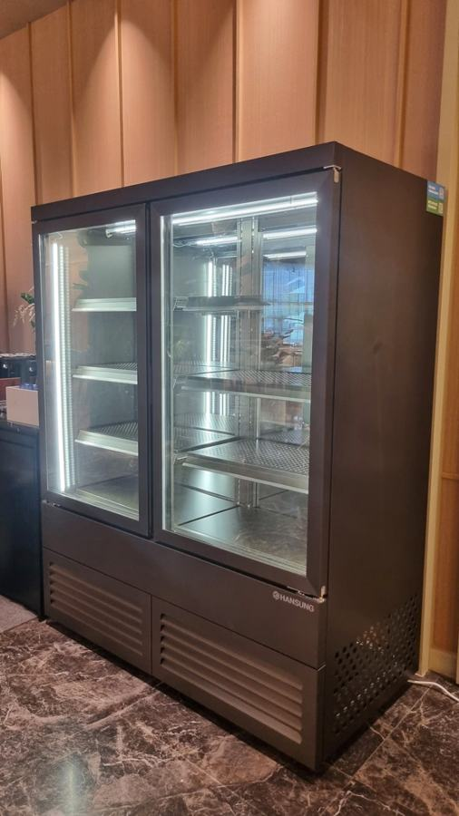
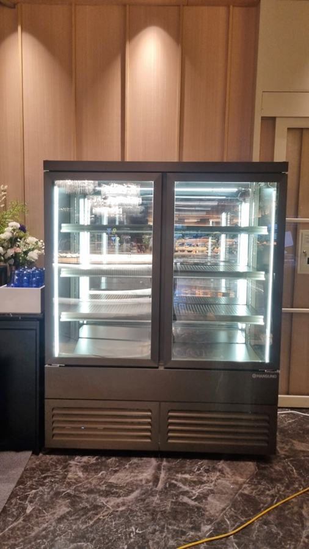
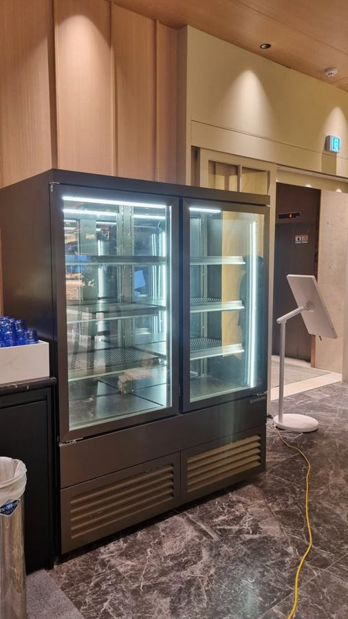
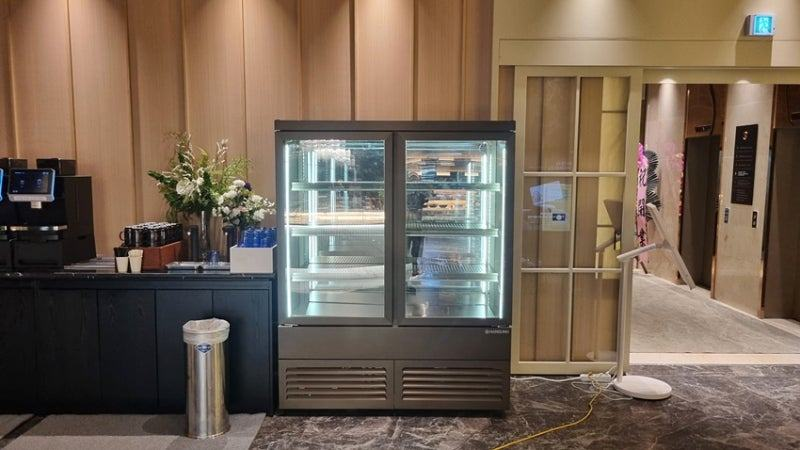
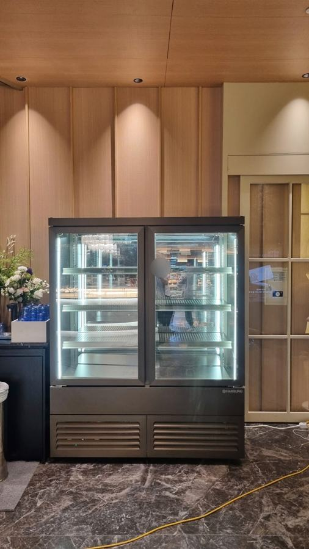
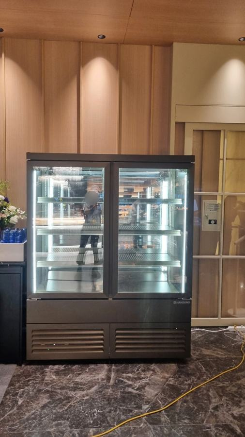
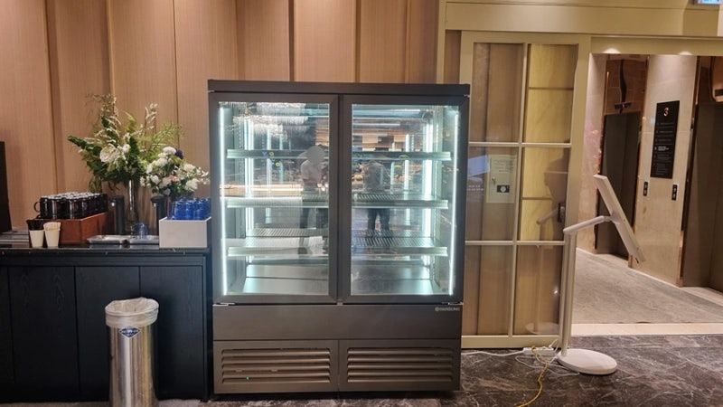
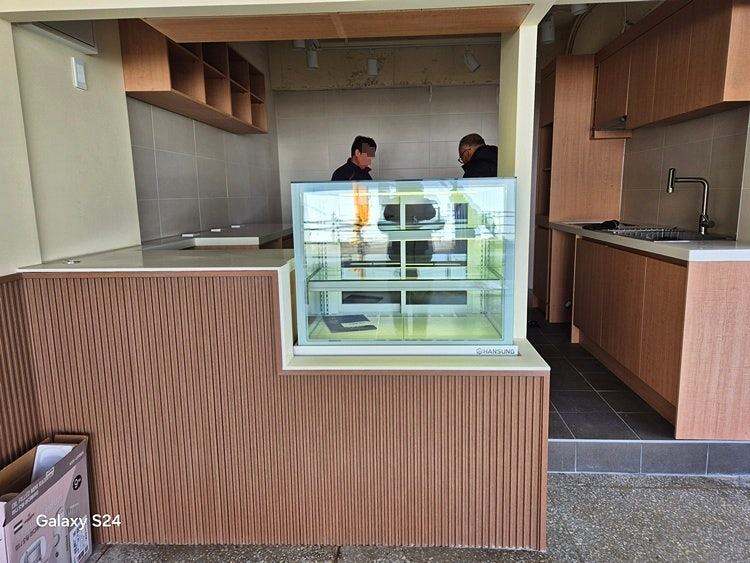

한성제품
냉장쇼케이스 온도가 칸마다 다를 때 확인할 곳

냉장쇼케이스 온도가 칸마다 다르다면 설정 온도를 낮추기 전에 냉기가 나오는 길이 상품에 막혔는지, 선반이 바람을 가로막는 구조인지, 온도 센서 주변 환경이 어떤지부터 확인하세요. 대부분 진열과 순환 문제이고, 그래도 편차가 크면 팬이나 센서 점검이 필요합니다.
안녕하세요. 냉장쇼케이스를 매장에 맞춰 설계하고 만드는 한성쇼케이스입니다.
"표시 온도는 정상인데 위 칸 상품만 미지근해요." 냉장쇼케이스를 쓰시는 사장님들께 자주 받는 문의입니다.
같은 진열장 안인데 칸마다 온도가 다르니, 표시창 숫자를 믿어야 할지 헷갈리실 수밖에 없죠.
이럴 때 많은 분들이 설정 온도부터 내리십니다. 그러면 원래 차갑던 칸은 더 차가워져 상품이 얼거나 마르고, 미지근한 칸은 크게 달라지지 않는 경우가 많습니다.
오늘은 냉장쇼케이스 온도가 칸마다 다르게 나올 때 확인해야 할 곳을 순서대로 정리하고, 처음부터 온도 편차를 줄이는 구조는 무엇인지도 함께 말씀드리겠습니다.
1. 표시 온도와 실제 온도가 다른 이유
냉장쇼케이스 표시창의 온도는 센서가 달린 한 지점의 온도입니다. 센서가 냉기 나오는 곳 가까이에 있으면 표시 온도는 낮게 나오지만, 문 쪽이나 위 칸은 그보다 높을 수 있습니다.
그래서 실제 상품 온도를 알려면 칸마다 온도계를 하나씩 두고 비교해 보셔야 합니다. 아침, 피크 시간 직후, 마감 때 세 번만 적어도 어느 칸이 어느 시간에 흔들리는지 보입니다.
- 위·중간·아래 칸에 온도계를 하나씩 두세요.
- 하루 세 번 온도를 기록해 비교하세요.
2. 냉기 길을 막는 진열
가장 흔한 원인은 진열입니다. 냉기가 나오는 뒷벽이나 상단 토출구 앞에 상품을 바짝 붙이거나, 선반을 빈틈없이 채우면 바람이 지나가지 못해 바깥쪽 칸이 미지근해집니다.
뒷벽과 상품 사이에 손가락 하나 들어갈 틈을 두고, 상품을 선반 앞 끝선까지 꽉 당기지 않는 것만으로 편차가 줄어드는 경우가 많습니다.
새로 채운 상온 상품은 한 칸에 몰지 말고 나눠 넣으세요.


3. 냉각 구조와 선반
냉기는 원래 위에서 아래로 흐르기 때문에 위에서 떨어뜨리는 방식은 위아래 온도 차가 생기기 쉽습니다.
뒷벽 전체에서 냉기를 고르게 내보내는 방식은 선반 앞뒤와 위아래 편차를 줄여 줍니다.
선반 재질도 영향을 줍니다. 막힌 판 선반은 아래 칸으로 가는 바람을 가로막고, 구멍이 뚫린 타공 선반은 냉기가 상품 사이사이로 지나가게 합니다.
지금 쓰는 선반 위에 받침이나 쟁반을 깔아 두셨다면 그것만 치워도 아래 칸 온도가 달라질 수 있습니다.
- 선반 위 받침이나 쟁반이 바람을 막지 않는지 보세요.
4. 유리 김과 주변 열기
매장 안팎 온도 차가 크면 유리에 김이 서립니다. 김이 서린다는 건 유리 근처 공기가 내부보다 따뜻하다는 뜻이라, 문 쪽 칸 온도가 높게 나오는 경우가 많습니다.
히팅 열선이 들어간 유리는 표면 온도를 이슬점보다 높게 유지해 김을 막아 줍니다.
쇼케이스 옆에 커피 머신이나 오븐이 있거나 햇빛이 한쪽 면에만 닿는다면 그쪽 칸 온도가 높아집니다. 주변 열원을 옮기거나 가림판을 세워 보세요.
5. 점검을 받아야 할 때
진열과 주변 환경을 정리했는데도 편차가 크다면 팬 모터나 센서 이상일 수 있습니다. 바람 소리가 거의 들리지 않거나, 특정 칸만 계속 높거나, 표시 숫자가 갑자기 뛴다면 기록해 둔 온도와 함께 점검을 요청하세요.
이때 설정 온도를 계속 내리는 건 콤프레셔 부담만 키웁니다.
체크리스트
- 칸별 온도계와 하루 세 번 기록
- 뒷벽·토출구 앞 틈 확보
- 선반 위 받침·쟁반 제거
- 유리 김과 주변 열원 확인
- 팬 소리·센서 표시 이상 시 점검 요청
현장에서 자주 보는 경우: 닦아도 생기는 유리 습기와 위치별 신선도 차이
매장에서 진열한 상품이 유리에 서린 김에 가려지거나, 같은 진열장 안에서도 위치에 따라 신선도가 달라 곤란하다는 상담을 자주 받습니다.
일반 냉장고처럼 위에서 냉기를 떨어뜨리는 구조에 일반 유리를 쓴 장비에서 이런 일이 많았습니다.
이런 매장에는 뒷벽 전체에서 냉기를 순환시켜 선반 앞뒤·위아래 온도 차를 줄이는 구조, 냉기가 상품 사이로 지나가며 직접 냉풍을 막아 건조를 줄이는 타공 선반, 내부 온도를 실시간으로 감지해 설정 온도를 일정하게 지키는 센서, 결로를 막는 히팅 열선 유리를 갖춘 냉장쇼케이스를 권해 드렸습니다.









자주 묻는 질문
냉장쇼케이스 적정 온도는 몇 도인가요?
진열하는 상품에 따라 다릅니다. 음료, 디저트, 샌드위치, 반찬마다 맞는 범위가 달라 진열 품목을 기준으로 정하시고, 칸별 실제 온도를 확인하며 조정하시길 권합니다.
설정 온도를 낮췄는데도 위 칸이 미지근해요.
냉기 순환이 막혔을 가능성이 큽니다. 토출구 앞 상품과 선반 위 받침을 먼저 정리해 보시고, 그래도 같다면 팬이나 센서 점검을 받아 보세요.
온도 문제로 점검을 받으려면 어떻게 하나요?
대표전화 031-986-2458로 기록해 둔 칸별 온도와 증상을 말씀해 주세요. 전국 240여 개 A/S 센터 중 가까운 곳에서 대응합니다.
매장 조건에 맞춰 만드는 한성쇼케이스
원하시는 제품 사진과 설치할 공간 사진만 보내 주셔도 매장에 맞는 구성을 추천해 드립니다.
- 전국 240여 개 A/S 전담 센터 운영
- 본사 대량 자재 매입으로 품질 대비 합리적인 가격
- 유럽제·삼성 냉각 콤프레셔 적용
- 국내 최초 쇼케이스 전문 디자이너 상주
매장 폭과 원하는 진열 구성을 알려 주세요. 실측과 견적을 안내해 드립니다.
031-986-2458